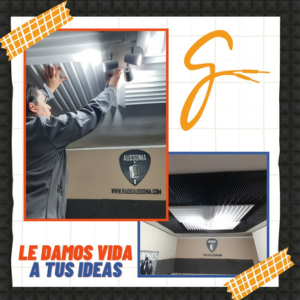
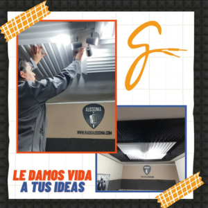
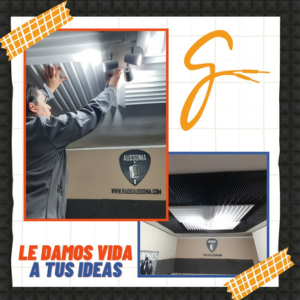

Stronger, una empresa dedicada a la grabación de proyectos musicales, surgió en el año 2015 en respuesta a la creciente necesidad de músicos de contar con un espacio adecuado para llevar a cabo sus grabaciones. En esa época, la zona carecía de opciones suficientes para este tipo de trabajos, por lo que Antonela, aprovechando sus conocimientos y experiencia, decidió brindar su ayuda a aquellos que lo necesitaban. A medida que el servicio de grabación fue ganando popularidad y una creciente demanda, nos dimos cuenta de que había una oportunidad para expandir nuestros conocimientos y servicios. Con el objetivo de satisfacer plenamente las necesidades de nuestros clientes, comenzamos a diversificarnos, incorporando también servicios relacionados con la producción audiovisual y soluciones acústicas. Hoy en día, en Stronger nos enorgullece contar con un equipo de profesionales altamente capacitados y con experiencia en diversas áreas, desde la grabación y mezcla de audio, hasta la producción de videos musicales y la implementación de soluciones acústicas personalizadas. Nuestra amplia gama de servicios nos permite ofrecer un enfoque integral a nuestros clientes, brindándoles soluciones adaptadas a sus necesidades específicas. En Stronger nos comprometemos a brindar un servicio de la más alta calidad, utilizando tecnología de vanguardia y técnicas innovadoras para garantizar resultados excepcionales. Nos esforzamos por crear un ambiente creativo y profesional donde los artistas puedan dar rienda suelta a su talento y obtener un producto final que cumpla con sus expectativas y supere sus sueños. Nuestra pasión por la música y el arte nos impulsa a seguir creciendo y evolucionando en el campo de la producción musical y audiovisual.
